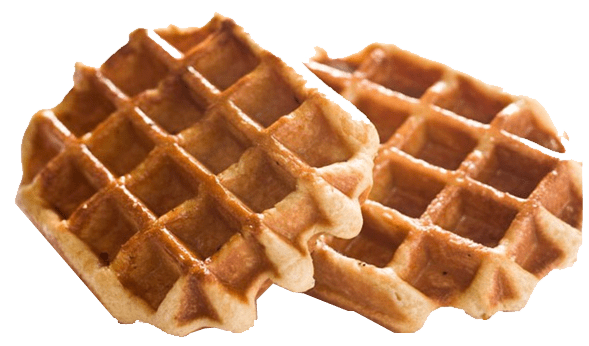
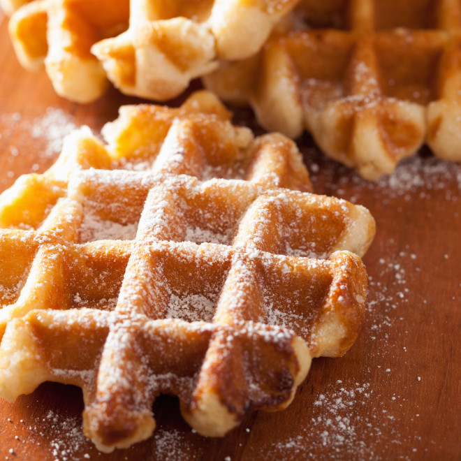
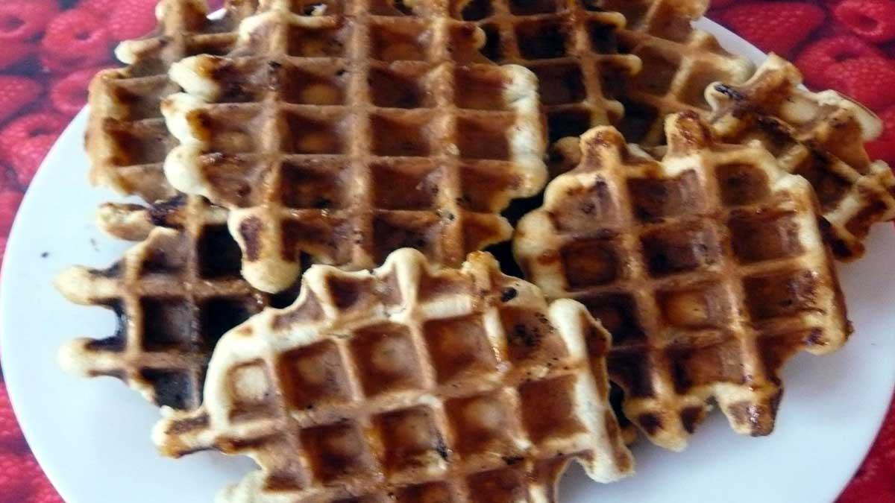

Les Gauffres de Martine

Une douce odeur, une robe dorée et croustillante…
Nous avons tous dégusté une gaufre à un moment de notre vie, lorsque nous étions enfants, à la fête foraine, au bord de la mer ou dans les marchés de noël et maintenant chez Yummy & Guiltfree ! Mais savons-nous quelle est l’origine de cette gourmandise ? Selon certaines sources la gaufre daterait du Moyen-Âge, Saint-Louis aurait créé la « confrérie des oubliyeurs ». Ces hommes, ancêtres des pâtissiers, fabriquaient des biscuits appelés « oublies » un dérivé des hosties qu’ils distribuaient à la sortie des églises. Ces « oublies » étaient fabriquées entre deux fers, roulées en forme de cornets ou de bâtons et décorées avec des figures pieuses. Les « oublies » sont vite devenues les gourmandises à la mode ! Le moule, il fût inventé par un forgeron au 13èmesiècle, il créa des plaques alvéolées et articulées, qui ressemblaient aux alvéoles des ruches des abeilles. C’est grâce à ces moules que la gaufre fût appelée ainsi ?
Nous avons tous dégusté une gaufre à un moment de notre vie, lorsque nous étions enfants, à la fête foraine, au bord de la mer ou dans les marchés de noël et maintenant chez Yummy & Guiltfree ! Mais savons-nous quelle est l’origine de cette gourmandise ? Selon certaines sources la gaufre daterait du Moyen-Âge, Saint-Louis aurait créé la « confrérie des oubliyeurs ». Ces hommes, ancêtres des pâtissiers, fabriquaient des biscuits appelés « oublies » un dérivé des hosties qu’ils distribuaient à la sortie des églises. Ces « oublies » étaient fabriquées entre deux fers, roulées en forme de cornets ou de bâtons et décorées avec des figures pieuses. Les « oublies » sont vite devenues les gourmandises à la mode ! Le moule, il fût inventé par un forgeron au 13èmesiècle, il créa des plaques alvéolées et articulées, qui ressemblaient aux alvéoles des ruches des abeilles. C’est grâce à ces moules que la gaufre fût appelée ainsi ?
Le mot gaufre vient de « walfre » qui signifie « rayon de miel » en vieux français du 12ème siècle.
Bien-sûre cette théorie sur la naissance de la gaufre n’est pas la seule ! Il y en a bien d’autres par exemple selon d’autres sources l’origine de la gaufre remonterait au 14ème siècle. Lorsque les villageois belges fêtaient les récoltes, son aspect dépendait de la richesse du village, la gaufre était dégustée pour mardi gras et le nouvel an. Ces gaufres étaient bien loin de ressembler à celles que nous consommons aujourd’hui ! Dans sa composition il n’y avait que de la farine de base et de l’eau, elles pouvaient même parfois remplacer le pain.
Bien-sûre cette théorie sur la naissance de la gaufre n’est pas la seule ! Il y en a bien d’autres par exemple selon d’autres sources l’origine de la gaufre remonterait au 14ème siècle. Lorsque les villageois belges fêtaient les récoltes, son aspect dépendait de la richesse du village, la gaufre était dégustée pour mardi gras et le nouvel an. Ces gaufres étaient bien loin de ressembler à celles que nous consommons aujourd’hui ! Dans sa composition il n’y avait que de la farine de base et de l’eau, elles pouvaient même parfois remplacer le pain.

